# 了解 Github page
寫好了專案我們通常會需要一台 Server 上傳我們的網站。有很多付費的，也有免費的，但如果只是很單純的 html、js、css，那麼你可以使用 Github Pages 。通常，如果租用了主機，通常還會需要買一個域名（你不會想給用戶看到 ip 吧），很幸運地 Github Pages 還提供了一個免費的域名給我們。
# 建立一個 Repository
登入 Github ，然後右上角的 + 然後點 New repository
範例引導圖
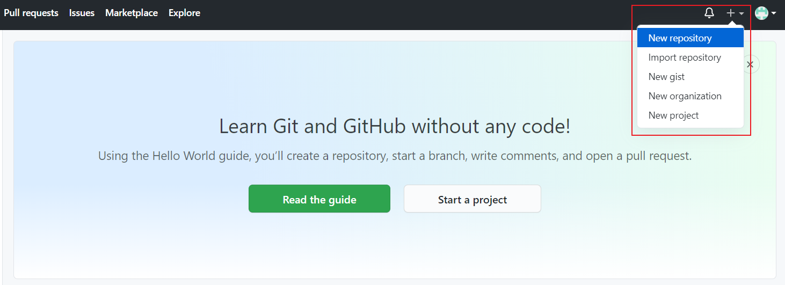
接著這邊要注意， Repository name 這邊一定要填 [你的github帳號].github.io
像我的帳號是 zrnteacher ，所以我就要輸入 zrnteacher.github.io ，然後按 [Create Repository] 。
範例引導圖
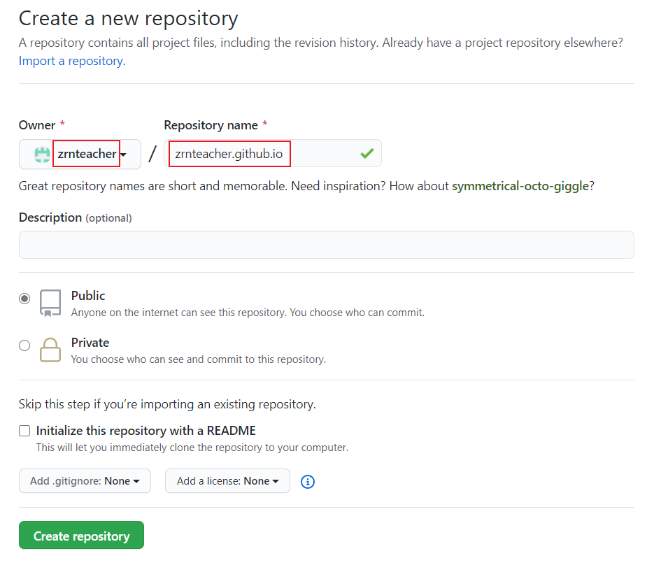
# 建立網站啦
當專案建立完畢後，再點上方的 Settings 頁籤。
範例引導圖
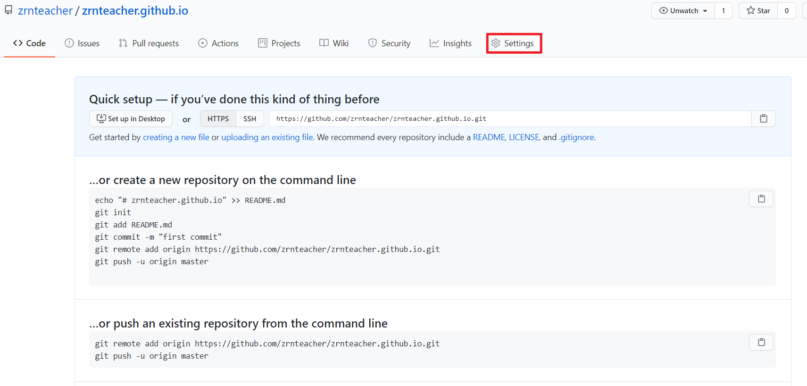
將頁面往下拉，找到 GitHub Pages 的選項後，點下方的 Choose a theme 鈕。
範例引導圖
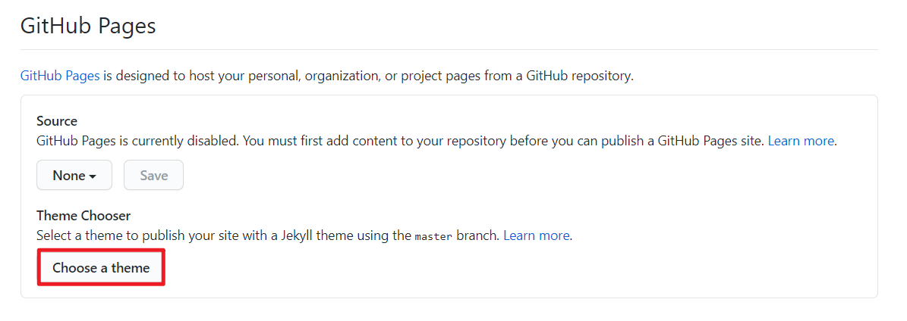
接著隨便選一個佈景主題，因為我們完全不會用到
範例引導圖
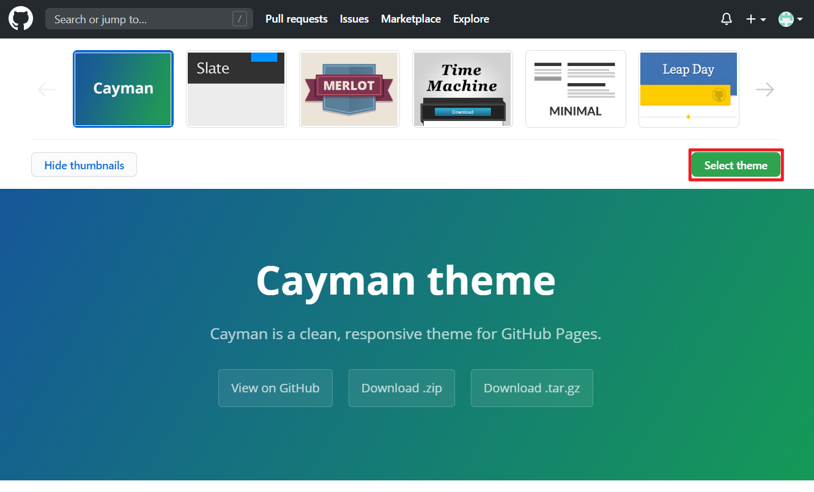
當建立好後，上方面就會顯示 GitHub Pages 外部連結，這就是你現在網站的名稱，不妨點進去看看。
範例引導圖
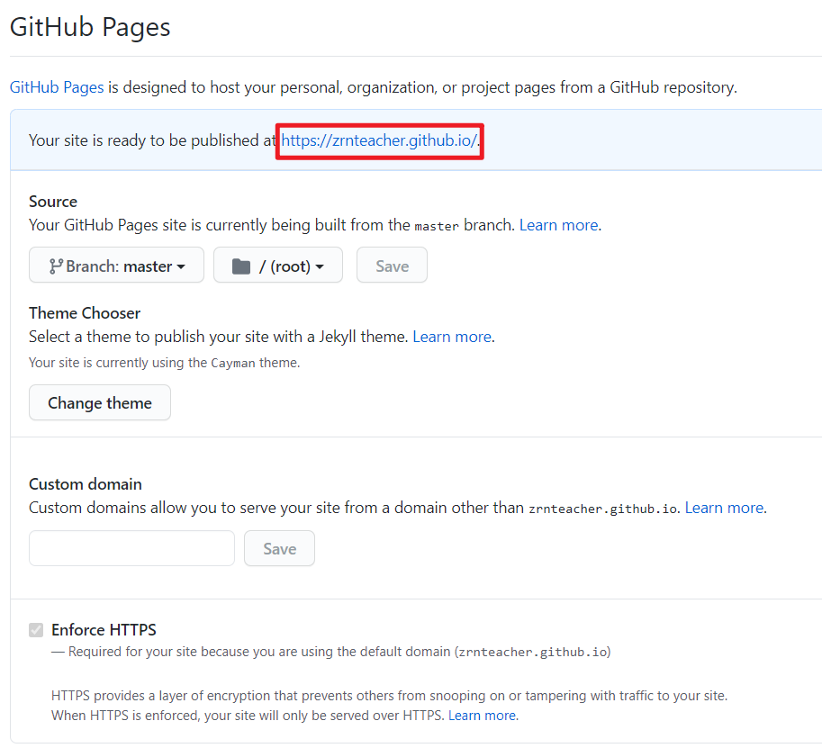
如果能看到這個畫面，代表你已經完成了喔～～
範例引導圖
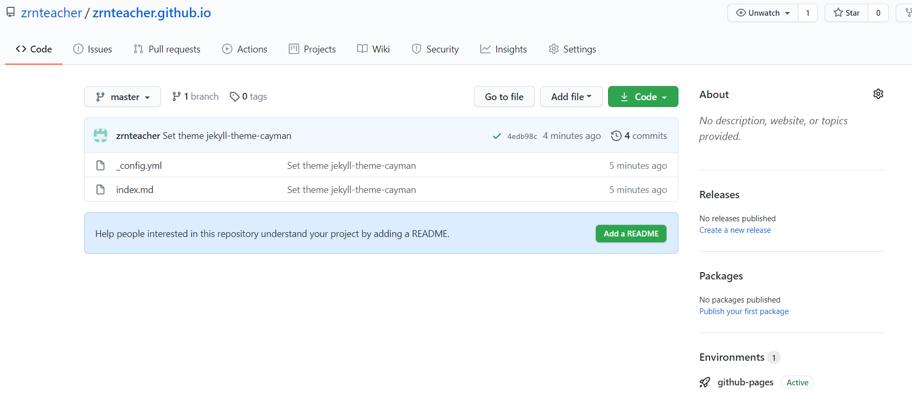
# GitHub Desktop 桌面程式
# 拉資料下來
接著打開到 GitHub Desktop 桌面程式，點到 option 設定中。
範例引導圖
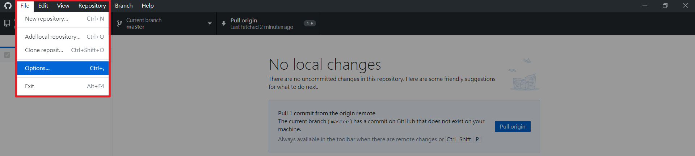
按 Sign In 登入
範例引導圖
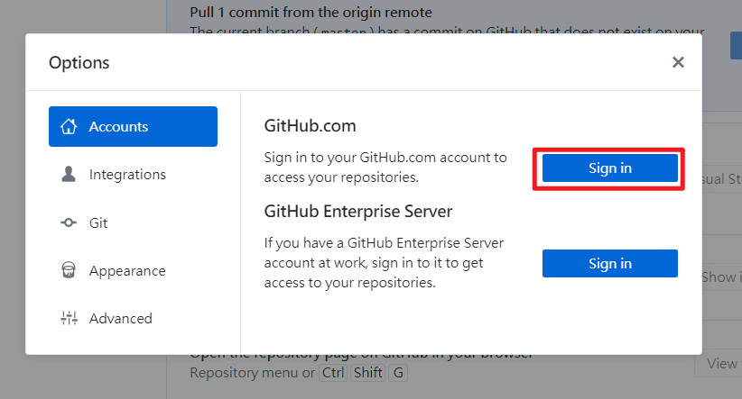
接著就登入你的 github帳號 就好了
範例引導圖
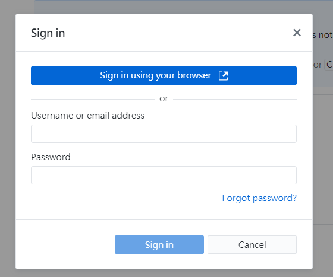
選擇你放網站的倉庫
範例引導圖
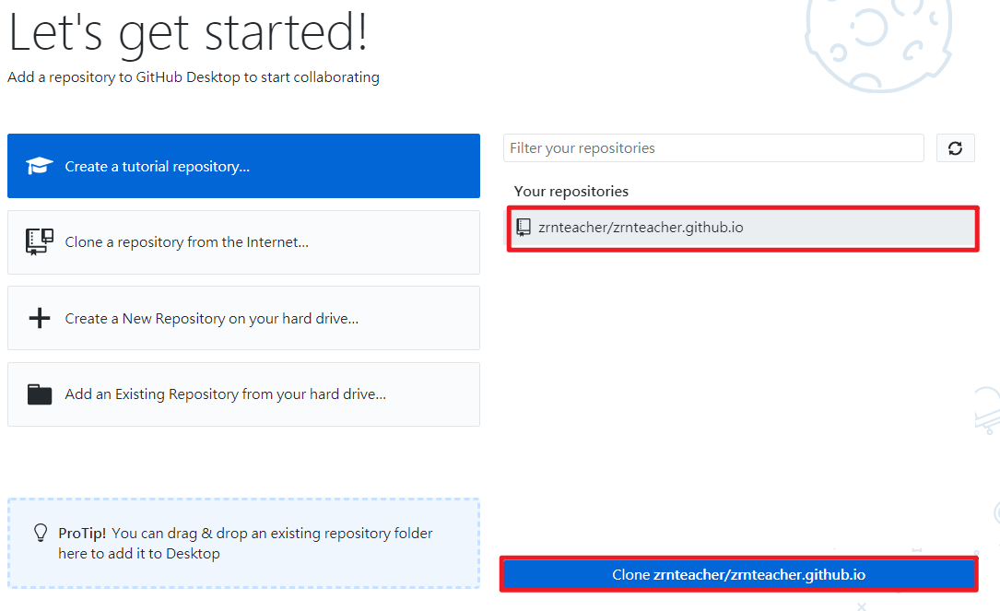
將檔案 clone 下來，為了方便處理，就直接把路徑導到桌面就好
範例引導圖
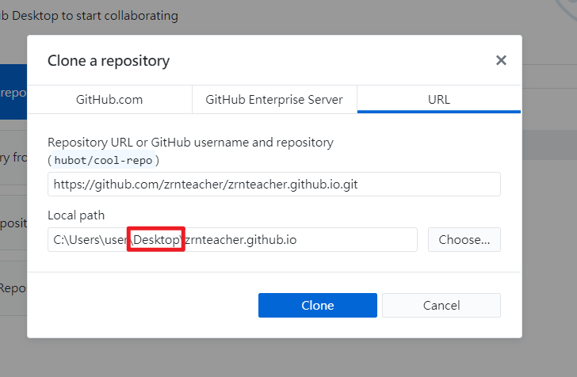
完成後，成果會長這樣喔～～
範例引導圖
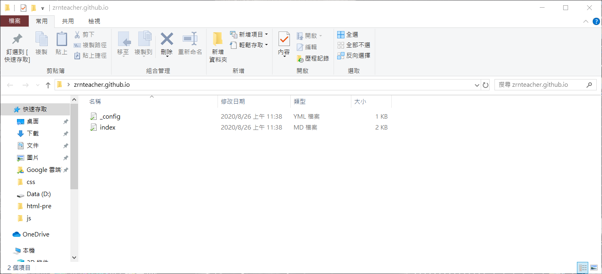
# 推資料上去
將這個檔案下載下來後，把它移到剛建好連結的資料夾內。
並 刪除掉原本的兩個檔案。
範例引導圖

移動好後， GitHub Desktop 會像此圖
之後，在 summary 中填上任意有關修改的字句，像我就填上了 前置任務
再來點擊下方的 commit to master
範例引導圖

點擊右上方的 Push origin ，將檔案推上去
範例引導圖
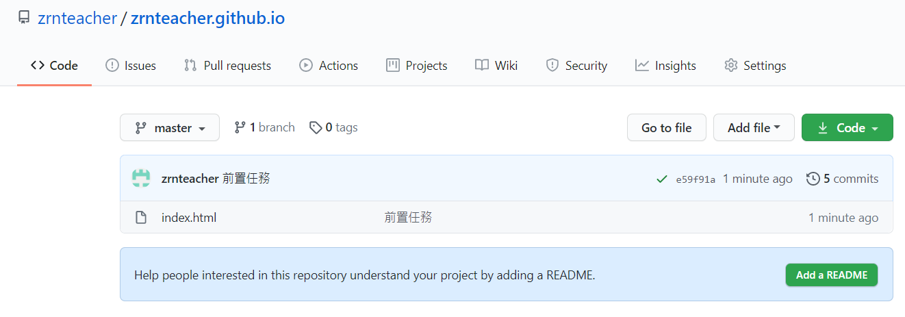
等待一陣子後， github 上的檔案就會改變了
範例引導圖
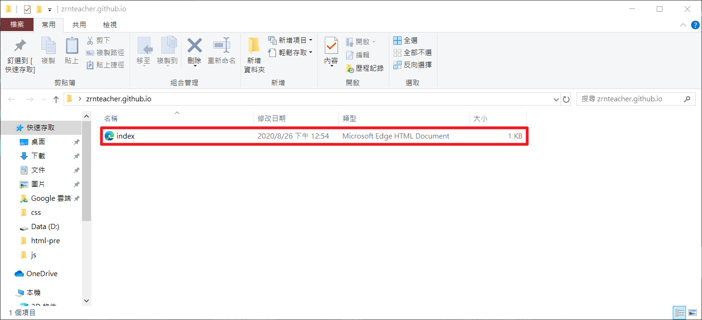
# 完成
把上述動作完成後，再打開你的 github page 看看吧，應該就會有改變了 (o ゜▽゜) o☆